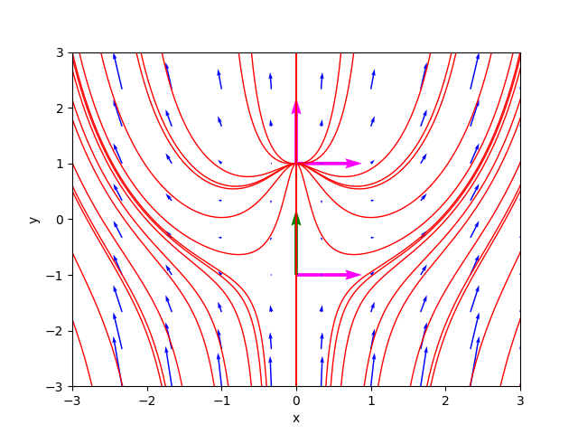
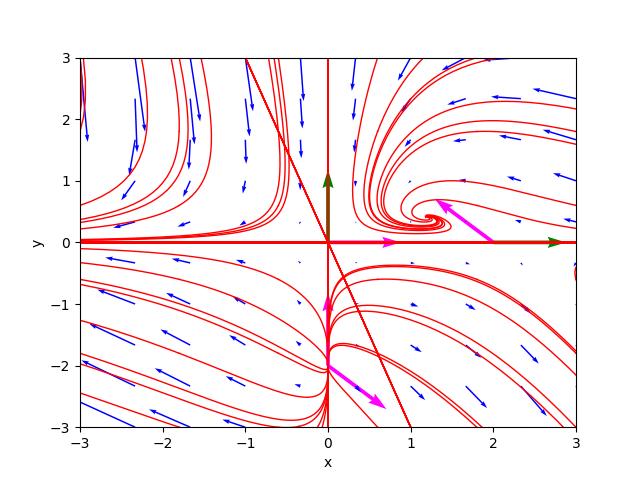
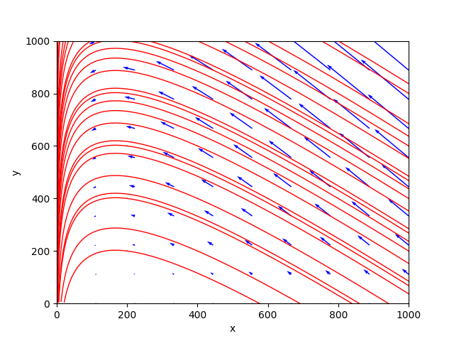
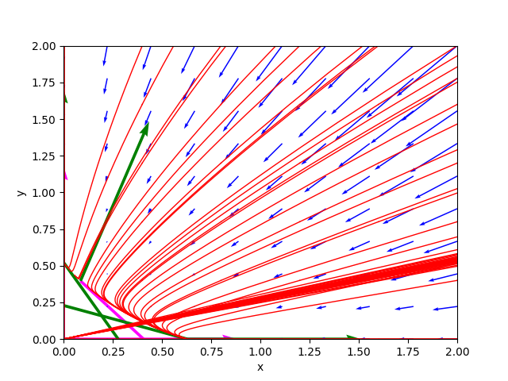
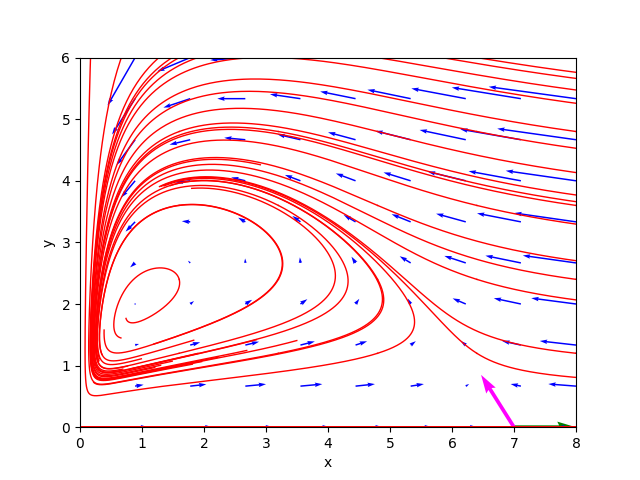

Analyzer of a nonlinear autonomous dynamical system on the plane by Hartman-Grobman theorem
This post presents the Python program nonlin-auton-plane-sys-hartman-analyzer.py and its command line usage.
The program analyzes, using both symbolic techniques (via SymPy) and numerical techniques (via NumPy),
the behavior of a nonlinear and autonomous dynamic system on the plane
by a system of two differential equations expressed in this form:
$$ \begin{equation}
\begin{cases}
x'(t) = P(x, y)
\\
y'(t) = Q(x, y)
\end{cases}
\end{equation} $$
where $P$ and $Q$ are two nonlinear functions of $x$ and $y$.
The program first determines the critical points and whether they are finite in number (the program does not support a finite number of critical points),
determines whether they are hyperbolic or non-hyperbolic by analyzing the eigenvalues and eigenvectors of the Jacobian matrix calculated at each critical point;
then only for hyperbolic critical points the program classifies them in the appropriate category
analyzing the type and stability of the linear system obtained by applying the Hartman–Grobman theorem.
Finally, the program also draws the phase portrait on the plane which provides a qualitative analysis of the behavior of the trajectories
on which it also draws the eigenvectors (if they are not complex) of the constant coefficient matrices representing the linearized systems at the hyperbolic critical points.
Basically, the Hartman-Grobman theorem shows that the behavior of a dynamical system around a hyperbolic critical point
is qualitatively similar to that of its linearization around that point and provides the linearization formula which is based on
on the Jacobian matrix of the original system computed at that critical point.
So by studying this linearization, which is easier, we can indirectly study some characteristics of the original system.
Thanks to Prof. Fausta D'Acunzo from Preparazione 2.0 for the theoretical support provided on nonlinear and autonomous systems of differential equations.
To get the code see paragraph Download del codice completo at the end of this post.
For a more in-depth study of linear, homogeneous systems on the plane with constant coefficients, see post
Analyzer of a constant coefficient linear and homogeneous dynamical system on plane also published on this website.
Conventions
In this post, the conventions used are as follows:
- $t$ is the time independent variable.
- $x(t)$ and $y(t)$ are the unknown functions of the system.
- $J$ indicates the Jacobian matrix.
- $J_{(x_i, y_i)}$ indicates the Jacobian matrix calculated at point $\left[\begin{matrix} x_i & y_i \end{matrix} \right]^\dag$.
- $\lambda_{i_1}$ and $\lambda_{i_2}$ are the two eigenvalues of the matrix $J_{(x_i, y_i)}$.
Definitions
The following definitions apply in this post:
-
Autonomous system: a system of ordinary differential equations that do not explicitly depend on the independent variable $t$.
-
Critical point: a point where $\frac{dx}{dt}$ and $\frac{dy}{dt}$ computed at that point are equal to $0$ for every $t$.
-
Stationary or equilibrium point: a critical point that is of relative minimum or relative maximum, and not instead a saddle point.
-
Jacobian matrix: is the 2x2 matrix whose elements are the partial prime derivatives of the functions $P(x, y)$ and $Q(x, y)$ with respect to $x$ and $y$.
-
Hyperbolic point: a critical point $\left[\begin{matrix} x_i & y_i \end{matrix} \right]^\dag$ such that
the matrix $J_{(x_i, y_i)}$ that linearizes the initial system at that critical point has no eigenvalues with real part equal to $0$.
The word "hyperbolic" is due to the fact that on the plane the trajectories close to the hyperbolic point lie on hyperbola lines centered at that point with respect to a suitable reference system.
-
Non-hyperbolic point: a critical point $\left[\begin{matrix} x_i & y_i \end{matrix} \right]^\dag$ such that
the matrix $J_{(x_i, y_i)}$ that linearizes the initial system at that critical point has eigenvalues equal to zero or pure imaginary (so with real part equal to $0$).
Program features
The program takes as input, via command line, the pair of nonlinear functions $P(x,y)$ and $Q(x,y)$
which represent the system to be studied in the form
$$ \begin{equation}
\begin{cases}
x'(t) = P(x, y)
\\
y'(t) = Q(x, y)
\end{cases}
\end{equation} $$
and determines the following characteristics:
- The set of critical points, by solving the system of equations: $$ \begin{equation} \begin{cases} P(x, y) = 0 \\ Q(x, y) = 0 \end{cases} \end{equation} $$ If the critical points are infinite, the program does no further processing and jumps to drawing the phase portrait.
- The type of critical points, divided between hyperbolic vs non-hyperbolic by studying the real part of the eigenvalues of the Jacobian matrix computed for each critical point: if the real part is non-zero, the point is of hyperbolic type, otherwise (so at least one eigenvalue is equal to zero or pure imaginary) the point is non-hyperbolic.
- The eigenvalues and eigenvectors of the Jacobian matrix $J_{(x_i, y_i)}$, distinguishing the various cases between real vs complex, sign (of the real part) concordant or discordant, degenerate cases (geometric multiplicity less than 2); in this last case the program calculates the generalized eigenvectors using an algorithm based on Jordan blocks.
- The class of critical points, divided between stable vs unstable and between node, point, saddle, singular, degenerate and any combinations of them as a function of the sign of the eigenvalues of the Jacobian matrix computed for each hyperbolic critical point.
- The trajectories, plotted in red and computed by numerically solving the system of differential equations by discretely varying the initial condition at time $t=0$.
- The gradient, plotted as a vector field with blue arrows; the length of the arrows indicates the value of the modulus of the gradient, the direction indicates the direction in which the gradient vector tends to $\mathbf{0}$.
- Eigenvectors, drawn only if they have real components; an eigenvector corresponding to a positive eigenvalue is drawn with a magenta colored arrow, an eigenvector corresponding to a negative eigenvalue is drawn with a green arrow.
Program usage
To obtain program usage nonlin-auton-plane-sys-hartman-analyzer.py simply run the following command:
$ python nonlin-auton-plane-sys-hartman-analyzer.py --helpusage: nonlin-auton-plane-sys-hartman-analyzer.py [-h] [--version] --dx_dt
FUNC_DX_DT_BODY --dy_dt
FUNC_DY_DT_BODY
[--t_end T_END]
[--t_num_of_samples T_NUM_OF_SAMPLES]
[--x0_begin X0_BEGIN]
[--x0_end X0_END]
[--x0_num_of_samples X0_NUM_OF_SAMPLES]
[--y0_begin Y0_BEGIN]
[--y0_end Y0_END]
[--y0_num_of_samples Y0_NUM_OF_SAMPLES]
[--font_size FONT_SIZE]
nonlin-auton-plane-sys-hartman-analyzer.py analyzes a dynamyc system modeled
by a nonlinear planar system using Hartman theorem
optional arguments:
-h, --help show this help message and exit
--version show program's version number and exit
--dx_dt FUNC_DX_DT_BODY
dx/dt=P(x, y) body (lamba format)
--dy_dt FUNC_DY_DT_BODY
dy/dt=Q(x, y) body (lamba format)
--t_end T_END In the phase portait diagram, it is the final value
of the interval of variable t (starting value of t is 0).
For backward time trajectories, t goes from -t_end to 0;
for forward time trajectories, t goes from 0 to t_end.
--t_num_of_samples T_NUM_OF_SAMPLES
In the phase portait diagram, it is the number of samples
of variable t between -t_end and 0
for backward time trajectories
and also it is the number of samples of variable t
between 0 and t_end for forward time trajectories
--x0_begin X0_BEGIN In the phase portait diagram, it is the starting
value of the interval of initial condition x0
--x0_end X0_END In the phase portait diagram, it is the final
value of the interval of initial condition x0
--x0_num_of_samples X0_NUM_OF_SAMPLES
In the phase portait diagram, it is the number of samples
of initial condition x0 between x0_begin and x0_end
--y0_begin Y0_BEGIN In the phase portait diagram, it is the starting value
of of interval for initial condition y0
--y0_end Y0_END In the phase portait diagram, it is the final value
of intervalfor initial condition y0
--y0_num_of_samples Y0_NUM_OF_SAMPLES
In the phase portait diagram, it is the number of samples
of initial condition y0 between y0_begin and y0_end
--font_size FONT_SIZE
font size-
-h, --help: shows the usage of the program and ends the execution.
-
--version: shows the version of the program and ends the execution.
-
--dx_dt: lambda expression of the function $P(x,y)$.
This option is mandatory.
-
--dy_dt: lambda expression of the function $Q(x,y)$.
This option is mandatory.
-
--t_end: interval of the variable $t$ between 0 and t_end; (default 100.0).
In the phase portrait, backward trajectories are drawn by varying the time between -t_end and 0 while forward trajectories are drawn by varying the time between 0 and t_end.
-
--t_num_of_samples: in the phase portrait is denotes the number of discrete values of $t$ between 0 and t_end to plot forward trajectories;
similarly, for backward trajectories, denotes the number of discrete values of $t$ between -t_end and 0; (default: 10).
-
--x0_begin and --x0_end: in the phase portrait indicates interval of change in the initial condition $x_0$; (default respectively: -5.0 and 5.0).
-
--x0_num_of_samples: in the phase portrait indicates the number of discrete values of $x_0$ in the interval specified by the previous option; (default: 6).
-
--y0_begin and --y0_end: in the phase portrait indicates interval of change in the initial condition $y_0$; (default respectively: -5.0 and 5.0).
-
--y0_num_of_samples: in the phase portrait indicates the number of discrete values of $y_0$ in the interval specified by the previous option; (default: 6).
-
--font_size: font size of all labels present in the figures generated by the program; (default: 10).
Examples
A series of examples follow, all available on GitHub at this link nonlin-auton-plane-sys-hartman-analyzer-examples.
Some of them are described in detail below, for others there is only shown the phase portraits and we refer to the corresponding scripts on GitHub for the command line.
Example #01
The shell script for this example is example_01.sh.
The system consists of the following pair of differential equations:
$$ \begin{equation}
\begin{cases}
x' = x
\\
y' = x^2 + y^2 - 1
\end{cases}
\end{equation} $$
In order to study the behavior of such system we execute the command:
$ python nonlin-auton-plane-sys-hartman-analyzer.py \
--dx_dt "x" \
--dy_dt "x**2 + y**2 - 1" \
--t_num_of_samples 500 \
--x0_begin -3 --x0_end 3 \
--y0_begin -3 --y0_end 3Critical point(s) : [(0, -1), (0, 1)]
Formal Jacobian :
⎡ 1 0 ⎤
⎢ ⎥
⎣2⋅x 2⋅y⎦
*************************
Critical point : (0, -1)
Jacobian at c.p. :
⎡1 0 ⎤
⎢ ⎥
⎣0 -2⎦
Determinant : -2.0
Eigenvalues : 1.0 -2.0
Eigenvector 1 : [1.0, 0.0]
Eigenvector 2 : [0.0, 1.0]
Type of c.p. : Hyperbolic
Kind of critical point(s) : saddle point
*************************
Critical point : (0, 1)
Jacobian at c.p. :
⎡1 0⎤
⎢ ⎥
⎣0 2⎦
Determinant : 2.0
Eigenvalues : 1.0 2.0
Eigenvector 1 : [1.0, 0.0]
Eigenvector 2 : [0.0, 1.0]
Type of c.p. : Hyperbolic
Kind of critical point(s) : unstable nodeFurthermore both are hyperbolic and the eigenvalues of the Jacobian matrix computed at the point $\left[\begin{matrix} 0 & -1 \end{matrix} \right]^\dag$ have sign discordant and therefore the first critical point is classified as saddle point while the eigenvalues of the Jacobian matrix calculated at the point $\left[\begin{matrix} 0 & 1 \end{matrix} \right]^\dag$ are both positive, so the second critical point is classified as an unstable node.
The phase portrait generated by the program is as follows:

The portrait of the phases of example_01.sh.
Examples #02, #03 and #04
For brevity these three examples are not shown in detail. The shell scripts of these three examples are respectively:
example_02.sh
example_03.sh
example_04.sh
The phase portraits generated by the program are respectively:

The portrait of the phases of example_02.sh.

The portrait of the phases of example_03.sh.

The portrait of the phases of example_04.sh.
Example #05 epidemic
This example describes a simple model of the spread of an epidemic in a city.
Also this example for brevity is not shown in detail; the corresponding shell script is
example_05_epidemic.sh
The stage portrait generated by the program is as follows:

The portrait of the phases of example_05_epidemic.sh.
Example #06 infected species
This example describes the evolution of a population of healthy animals of a species, represented by the variable $x$,
and the subpopulation of infected animals, represented by the variable $y$, that never recover once infected,
both measured in millions.
The shell script for this example is example_06_infected_species.sh.
The system consists of the following pair of differential equations:
$$ \begin{equation}
\begin{cases}
x' = (b-d)x - \delta y & b=4, d=1, \delta=6
\\
y' = \tau y (x - y) - (\delta + d) y & \tau = 1
\end{cases}
\end{equation} $$
In order to study the behavior of such system we execute the command:
$ python nonlin-auton-plane-sys-hartman-analyzer.py \
--dx_dt "(4.0 - 1.0) * x - 6.0 * y" \
--dy_dt "1.0 * y * (x - y) - (6.0 + 1.0) * y" \
--t_num_of_samples 500 \
--x0_begin 0 --x0_end 20 \
--y0_begin 0 --y0_end 20Critical point(s) : [(0.0, 0.0), (14.0, 7.0)]
Formal Jacobian :
⎡ 3.0 -6.0 ⎤
⎢ ⎥
⎣1.0⋅y 1.0⋅x - 2.0⋅y - 7.0⎦
*************************
Critical point : (0.0, 0.0)
Jacobian at c.p. :
⎡3.0 -6.0⎤
⎢ ⎥
⎣0.0 -7.0⎦
Determinant : -21.0
Eigenvalues : 3.0 -7.0
Eigenvector 1 : [1.0, 0.0]
Eigenvector 2 : [0.5144957554275265, 0.8574929257125441]
Type of c.p. : Hyperbolic
Kind of critical point(s) : saddle point
*************************
Critical point : (14.0, 7.0)
Jacobian at c.p. :
⎡3.0 -6.0⎤
⎢ ⎥
⎣7.0 -7.0⎦
Determinant : 21.0
Eigenvalues : (-2+4.12310562j) (-2-4.12310562j)
Eigenvector 1 : [(0.52414241+0.43221891j), (0.73379938+0j)]
Eigenvector 2 : [(0.52414241-0.43221891j), (0.73379938-0j)]
Type of c.p. : Hyperbolic
Kind of critical point(s) : stable focusFurthermore both are hyperbolic and the eigenvalues of the Jacobian matrix computed at the point $\left[\begin{matrix} 0 & 0 \end{matrix} \right]^\dag$ have sign discordant and therefore the first critical point is classified as saddle point while the eigenvalues of the Jacobian matrix calculated at the point $\left[\begin{matrix} 14 & 7 \end{matrix} \right]^\dag$ are conjugate complexes with negative real part, so the second critical point is classified as stable focus.
The phase portrait generated by the program is as follows:

The portrait of the phases of example_06_infected_species.sh.
Example #07 competing species
This example describes a simple of two competing species in an environment where the common food supply is limited.
Also this example for brevity is not shown in detail; the corresponding shell script is
example_07_competing_species.sh
The stage portrait generated by the program is as follows:

The portrait of the phases of example_07_competing_species.sh.
Example #08 Lotka-Volterra
This example describes the dynamics of an ecosystem in which only two animal species interact: one of them as a predator (modeled by the variable $y$),
the other as its prey (modeled by the variable $x$) in accordance with the system published by Lotka in 1925 and independently by Volterra in 1926.
The shell script for this example is example_08_lotka_volterra.sh.
The system consists of the following pair of differential equations:
$$ \begin{equation}
\begin{cases}
x' = x (A - By) & A=\frac{2}{3}, B=\frac{4}{3}
\\
y' = y (Cx - D) & C=\frac{9}{10}, D=\frac{9}{10}
\end{cases}
\end{equation} $$
In order to study the behavior of such system we execute the command:
$ python nonlin-auton-plane-sys-hartman-analyzer.py \
--dx_dt "x * (0.666 - 1.333 * y)" \
--dy_dt "y * (0.9 * x - 0.9)" \
--t_num_of_samples 500 \
--x0_begin 0 --x0_end 4 \
--y0_begin 0 --y0_end 2Critical point(s) : [(0.0, 0.0), (1.0, 0.499624906226557)]
Formal Jacobian :
⎡0.666 - 1.333⋅y -1.333⋅x ⎤
⎢ ⎥
⎣ 0.9⋅y 0.9⋅x - 0.9⎦
*************************
Critical point : (0.0, 0.0)
Jacobian at c.p. :
⎡0.666 0.0 ⎤
⎢ ⎥
⎣ 0.0 -0.9⎦
Determinant : -0.5994
Eigenvalues : 0.666 -0.9
Eigenvector 1 : [1.0, 0.0]
Eigenvector 2 : [0.0, 1.0]
Type of c.p. : Hyperbolic
Kind of critical point(s) : saddle point
*************************
Critical point : (1.0, 0.499624906226557)
Jacobian at c.p. :
⎡-4.44089209850063e-16 -1.333⎤
⎢ ⎥
⎣ 0.449662415603901 0.0 ⎦
Determinant : 0.5994000000000004
Eigenvalues : (0+0.77420927j) (0-0.77420927j)
Eigenvector 1 : [(-0.86472998+0j), (0+0.50223704j)]
Eigenvector 2 : [(-0.86472998-0j), (0-0.50223704j)]
Type of c.p. : Non-hyperbolic
So Hartman theorem cannot be applied to this critical pointThe phase portrait generated by the program is as follows:

The portrait of the phases of example_08_lotka_volterra.sh.
Example #09 and #10 Holling-Tanner
This pair of examples describes like the previous one an ecosystem dynamics in which only two animal species interact: one of them as a predator (modeled by the variable $y$),
the other as its prey (modeled by the variable $x$), but following a different system of equations, called the Holling-Tanner system.
The shell scripts in this pair of examples are example_09_holling-tanner_0_dot5.sh and
example_10_holling_tanner_2dot5.sh.
The system consists of the following pair of differential equations:
$$ \begin{equation}
\begin{cases}
x' = x (1 - \frac{x}{7}) - \frac{6xy}{7 + 7x}
\\
y' = 0.2 y (1 - \frac{Ny}{x})
\end{cases}
\end{equation} $$
and the two examples differ only in the constant $N$ which is worth $0.5$ for the former and $2.5$ for the latter.
To study the behavior of such a system for $N=0.5$ execute the command:
$ python nonlin-auton-plane-sys-hartman-analyzer.py \
--dx_dt "x * (1 - x/7) - 6*x*y/(7+7*x)" \
--dy_dt "0.2*y * (1 - (0.5*y)/x)" \
--t_num_of_samples 500 \
--x0_begin 0 --x0_end 8 \
--y0_begin 0 --y0_end 6Critical point(s) : [(-7.0, -14.0), (1.0, 2.0), (7.0, 0.0)]
Formal Jacobian :
⎡ 42⋅x⋅y 2⋅x 6⋅y -6⋅x ⎤
⎢────────── - ─── - ─────── + 1 ─────── ⎥
⎢ 2 7 7⋅x + 7 7⋅x + 7 ⎥
⎢(7⋅x + 7) ⎥
⎢ ⎥
⎢ 2 ⎥
⎢ 0.1⋅y 0.2⋅y⎥
⎢ ────── 0.2 - ─────⎥
⎢ 2 x ⎥
⎣ x ⎦
*************************
Critical point : (-7.0, -14.0)
Jacobian at c.p. :
⎡3.33333333333333 -1.0⎤
⎢ ⎥
⎣ 0.4 -0.2⎦
Determinant : -0.2666666666666668
Eigenvalues : 3.2162457375544835 -0.08291240422114961
Eigenvector 1 : [0.9932149332261002, 0.11629314862309552]
Eigenvector 2 : [0.28093063252715217, 0.9597280759193689]
Type of c.p. : Hyperbolic
Kind of critical point(s) : saddle point
*************************
Critical point : (1.0, 2.0)
Jacobian at c.p. :
⎡0.285714285714286 -0.428571428571429⎤
⎢ ⎥
⎣ 0.4 -0.2 ⎦
Determinant : 0.11428571428571427
Eigenvalues : (0.04285714+0.33533413j) (0.04285714-0.33533413j)
Eigenvector 1 : [(0.71919495+0j), (0.40754380-0.56273143j)]
Eigenvector 2 : [(0.71919495-0j), (0.40754380+0.56273143j)]
Type of c.p. : Hyperbolic
Kind of critical point(s) : unstable focus
*************************
Critical point : (7.0, 0.0)
Jacobian at c.p. :
⎡-1.0 -0.75⎤
⎢ ⎥
⎣0.0 0.2 ⎦
Determinant : -0.2
Eigenvalues : -1.0 0.2
Eigenvector 1 : [1.0, 0.0]
Eigenvector 2 : [-0.52999894000318, 0.847998304005088]
Type of c.p. : Hyperbolic
Kind of critical point(s) : saddle pointTo study the behavior of such a system for $N=2.5$ execute the command::
$ python nonlin-auton-plane-sys-hartman-analyzer.py \
--dx_dt "x * (1 - x/7) - 6*x*y/(7+7*x)" \
--dy_dt "0.2*y * (1 - (2.5*y)/x)" \
--t_num_of_samples 500 \
--x0_begin 0 --x0_end 8 \
--y0_begin 0 --y0_end 6Critical point(s) : [(-1.4, -0.56), (5.0, 2.0), (7.0, 0.0)]
Formal Jacobian :
⎡ 42⋅x⋅y 2⋅x 6⋅y -6⋅x ⎤
⎢────────── - ─── - ─────── + 1 ───────⎥
⎢ 2 7 7⋅x + 7 7⋅x + 7⎥
⎢(7⋅x + 7) ⎥
⎢ ⎥
⎢ 2 ⎥
⎢ 0.5⋅y y⎥
⎢ ────── 0.2 - ─⎥
⎢ 2 x⎥
⎣ x ⎦
*************************
Critical point : (-1.4, -0.56)
Jacobian at c.p. :
⎡4.4 -3.0⎤
⎢ ⎥
⎣0.08 -0.2⎦
Determinant : -0.640000000000001
Eigenvalues : 4.347220505424427 -0.14722050542442328
Eigenvector 1 : [0.9998452761917251, 0.017590442777059078]
Eigenvector 2 : [0.5506931674648844, 0.8347077544311499]
Type of c.p. : Hyperbolic
Kind of critical point(s) : saddle point
*************************
Critical point : (5.0, 2.0)
Jacobian at c.p. :
⎡-0.476190476190476 -0.714285714285714⎤
⎢ ⎥
⎣ 0.08 -0.2 ⎦
Determinant : 0.15238095238095234
Eigenvalues : (-0.33809523+0.19512191j) (-0.33809523-0.19512191j)
Eigenvector 1 : [(0.94830405+0j), (-0.18333878-0.25904886j)]
Eigenvector 2 : [(0.94830405-0j), (-0.18333878+0.25904886j)]
Type of c.p. : Hyperbolic
Kind of critical point(s) : stable focus
*************************
Critical point : (7.0, 0.0)
Jacobian at c.p. :
⎡-1.0 -0.75⎤
⎢ ⎥
⎣0.0 0.2 ⎦
Determinant : -0.2
Eigenvalues : -1.0 0.2
Eigenvector 1 : [1.0, 0.0]
Eigenvector 2 : [-0.52999894000318, 0.847998304005088]
Type of c.p. : Hyperbolic
Kind of critical point(s) : saddle point

The portrait of the phases of example_09_holling_tanner_0dot5.sh.

The portrait of the phases of example_10_holling_tanner_2dot5.sh.
Bibliography
Stephen Lynch
Dynamical Systems with Applications using Python
Springer
2018Download of the complete code
The complete code is available at GitHub.
These materials are distributed under MIT license; feel free to use, share, fork and adapt these materials as you see fit.
Also please feel free to submit pull-requests and bug-reports to this GitHub repository or contact me on my social media channels available on the top right corner of this page.